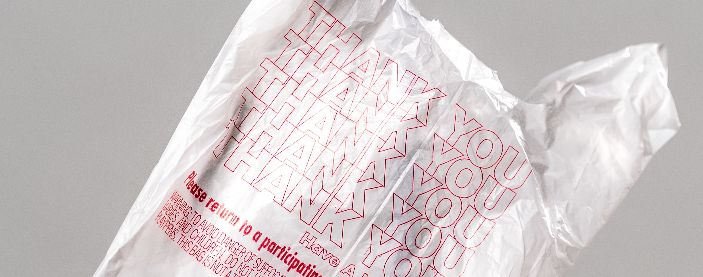
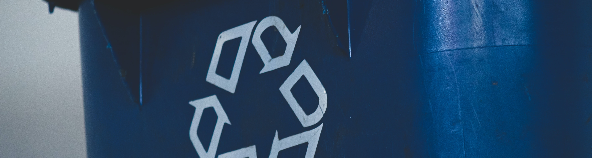
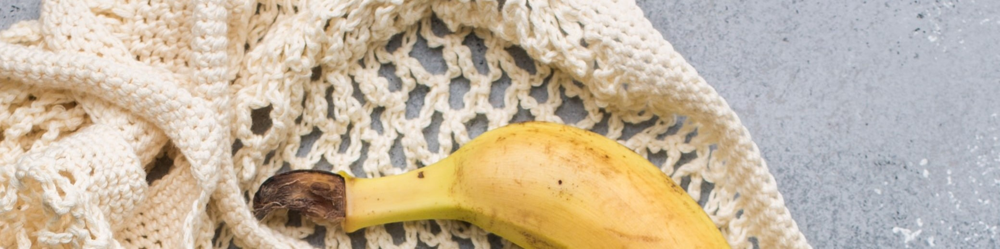
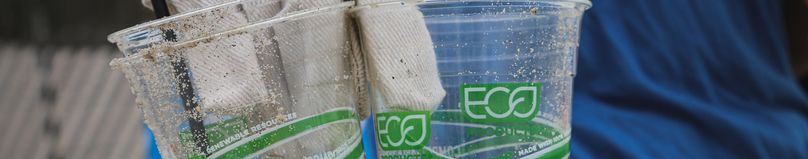
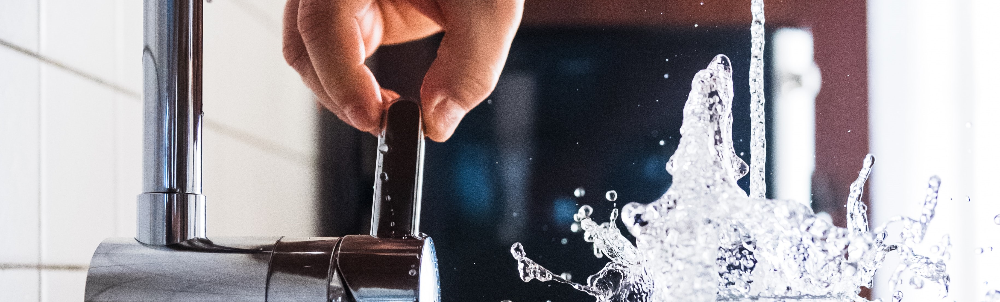
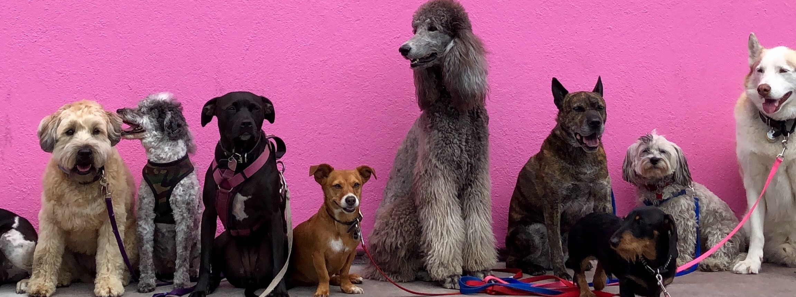

Почему важно беречь окружающую среду?
Каждый из нас сталкивался с тем, что некуда выкинуть мусор, а таскаться с ним не особо хочется, ведь дворники всё равно уберут.
Оставлял кран открытым, потому что вода тебе понадобится через пять минут, кажется, что не так уж много уйдёт.
Или набрал продуктов больше чем планировал, в сумку не вмещается и приходится брать пакет.
Можно привести много примеров из повседневной жизни, которые повлияли на сложившуюся проблему в экологии и продолжают развиваться в тяжёлую для проживания среду.
Не смотря на то, что государство и множество других организаций занимаются переработкой мусора и очищением вод, это занимает время и ресурсы. При этом в большинстве случаев несортированный мусор сжигают, из-за чего выхлопы остаются в воздухе, а это вредит природе и живым существам, в том числе и нам. Если продолжать создавать лишние проблемы, то вскоре будет нечем дышать и питаться, а потом и негде жить.
Многим кажется это слишком далеким, но если вы думаете о будущем и о тех сложностях с которыми мир борется каждый день, то мы рады раскрыть о простых, но полезных вещах, которые вы можете сделать.

Что может сделать каждый из нас в уменьшении загрязнения
1# Сортировка
Каждый наслышан о мусорных баках с разными отсеками ( для бумаги, пластика, стекла, техники и остального )И довольно несложно подумать, что у тебя в руках, выкинуть в правильный отсек, даже если мусорка забита можно пройти пару метров и найти другую.
По крайней мере лучше выбросить в мусорку, а не на улицу, ибо с каждого такого человека за день скапливается большая куча мусора и создает неудобства на пути и противный запах.
Помните, что дворников не миллион на одну улицу!

2# Эко сумка
Думаем, вы видели и даже покупали себе шопперы. Но мы стали забывать истиный замысел данной сумки,
а еë предназначение было в том, чтобы стать заменой пакетов. Сегодня их много разных видов и на любой вкус.
Даже если вы не собирались в магазин лучше всего возьмите его, а уж если вы до сех пор не приобрели такую принадлежность, то старайтесь купленные пакеты не выбрасывать, а использовать многоразово.
Даже казалось бы бумажные пакеты, сделанные специально разлагающимся, тратят много энергии и ресурсов при создании.

3# Cвоя бутылка
Как ни странно, но мало кто знает о том, что пластиковые стаканчики совершенно неэкологичные из-за плёнки,
которая сдерживает жидкость в стакане, при этом на неё расходуется такой важный ресурс как дерево.Некоторые кофейни осознают эту проблему и предлагают скидку за личную тару, поэтому трата на покупку бутылки поможет вам не только сэкономить, но и сберечь природу от лишних выбросов.

4# Берегите воду
Пресная вода — источник жизни на планете и важнейший компонент всех производственных процессов.Наша планета состоит из 71% воды и 29% суши, однако из-за выброшенных отходов с заводов в реки, моря и океаны, они скоро станут не пригодны даже для фильтрации.
Помимо этого водоросли, которые производят 70% всего нашего кислорода погибнут, из-за чего и мы вместе с ними.
Хотя пока на наших полках битком стоят бутылки с пресной водой, помните, что не стоит еë тратить зря, и уж тем более загрязнять.

О тех кому нужна помощь
"Собаки, которые любят" – некоммерческая организация, которая помогает бездомным собакам и кошкам.
Благотворительный Фонд официально зарегистрирован в апреле 2017 года и создан на основе волонтерского
коллектива, помогающего животным с 2011 года.Они оказывают системную поддержку животным в муниципальных и частных приютах: приезжают к ним в качестве волонтеров, социализируют и выгуливают, закупают корма и медикаменты. Опекают отдельных животных, которые попали в беду и нуждаются в лечении, обеспечивают их необходимой ветеринарной помощью.
Волонтеры Фонда #СобакиКоторыеЛюбят систематически проводят мероприятия, направленные на поиск животным нового дома и просвещение населения в области воспитания и содержания питомцев.
Кроме того, наши фестивали и "уроки доброты" для детей привлекают внимание людей к проблеме бездомных животных и популяризируют в глазах людей собак и кошек, оставшихся без дома. Протянуть руку помощи бездомным собакам и кошкам совсем не сложно, поверьте!